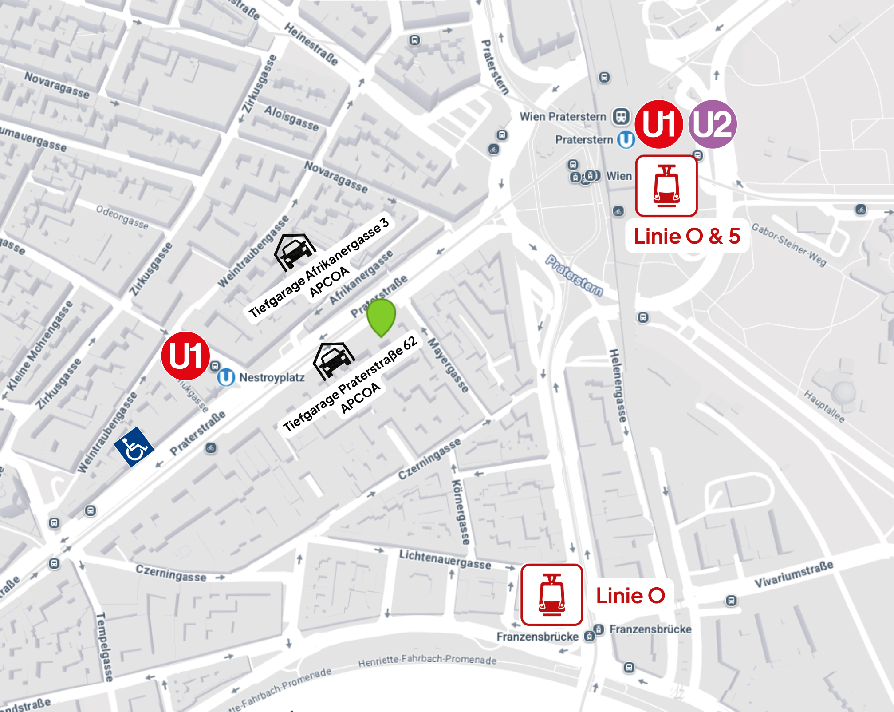

OA Dr. Ewald Walder - Wahlarzt
Professionelle medizinische Versorgung mit Fokus auf individuelle Behandlungskonzepte und moderne Therapiemethoden. Ihre Gesundheit steht im Mittelpunkt meiner Tätigkeit.
Moderne Behandlungsansätze
Flexible Terminvergabe
Persönliche Beratung
Foto Platzhalter
Praxis Foto
Mit langjähriger Erfahrung in der Orthopädie und Unfallchirurgie biete ich meinen Patienten eine umfassende und moderne medizinische Versorgung.
Meine Behandlungsphilosophie basiert auf einer gründlichen Diagnostik, individuellen Therapiekonzepten und dem Einsatz bewährter sowie innovativer Behandlungsmethoden. Als Wahlarzt nehme ich mir die Zeit, die für eine qualitativ hochwertige medizinische Betreuung notwendig ist.
In meiner Ordination in Wien steht Ihr Wohlbefinden im Mittelpunkt – von der ersten Konsultation bis zur erfolgreichen Genesung.
Mein Leistungsspektrum umfasst die gesamte konservative Orthopädie und Unfallchirurgie
Behandlung von Knie-, Hüft-, Schulter- und Sprunggelenksbeschwerden
Diagnostik und Therapie bei Rückenschmerzen und Bandscheibenproblemen
Expertise in der Behandlung von akuten und chronischen Sportverletzungen
Konservative und moderne Behandlungsmethoden bei Gelenkverschleiß
Professionelle postoperative Betreuung und Rehabilitation
Vorbeugende Maßnahmen und Gesundheitsberatung
Für einen Termin bei OA Dr. Ewald Walder, Facharzt für Orthopädie und Unfallchirurgie in Wien, ist keine Überweisung erforderlich. Patienten können unmittelbar einen Termin zur orthopädischen Untersuchung oder Behandlung buchen.
Die Terminvereinbarung bei OA Dr. Ewald Walder ist sowohl online als auch telefonisch unter 01 214 14 31 möglich. Die Onlinebuchung bietet eine schnelle und flexible Möglichkeit, orthopädische Termine zu reservieren.
OA Dr. Ewald Walder deckt ein breites Spektrum orthopädischer Erkrankungen ab. Dazu zählen Knie, Hüfte und Schulter, Rückenschmerzen, Bandscheibenprobleme, Sportverletzungen und Arthrose. Auch Nachbehandlungen nach Operationen gehören zu seinen Schwerpunkten.
Ein Termin bei OA Dr. Ewald Walder umfasst eine ausführliche orthopädische Untersuchung ohne Zeitdruck. Patienten erhalten verständliche Erklärungen zur Diagnose und eine maßgeschneiderte Therapieempfehlung.
Die Rückerstattung der Behandlungskosten bei OA Dr. Ewald Walder läuft vollständig automatisch über die Krankenkasse. Patienten müssen keine Unterlagen einreichen und profitieren von einer effizienten, direkten Abrechnung ohne eigene Mitarbeit.
Die Ordination von OA Dr. Ewald Walder verfügt über einen vollständig barrierefreien Zugang. Dadurch ist die Praxis besonders komfortabel für Patienten mit eingeschränkter Mobilität erreichbar.
Entlang der Praterstraße stehen viele Parkplätze zur Verfügung. Zusätzlich befinden sich APCOA Tiefgaragen in der Praterstraße 62 und Afrikanergasse 3.
OA Dr. Ewald Walder ermöglicht Patienten eine umfassende Betreuung im Herz Jesu Krankenhaus in 1030 Wien. Sowohl vorbereitende Untersuchungen als auch Nachkontrollen nach orthopädischen Eingriffen können dort stattfinden.
Als Wahlarzt rechne ich nach der ÖÄK-Honorarordnung ab. Sie erhalten eine detaillierte Rechnung, die Sie bei Ihrer Krankenkasse zur Rückerstattung einreichen können.
Die Rückerstattung durch Ihre Krankenkasse beträgt je nach Versicherung ca. 80% des Kassentarifs. Privatzusatzversicherungen übernehmen häufig einen Großteil der Kosten.
Auf Wunsch informiere ich Sie gerne vor der Behandlung über die voraussichtlichen Kosten.
Kurze Wartezeiten
Ausführliche Beratung
Modernste Ausstattung
Zentrale Lage in Wien
Buchen Sie Ihren Termin bequem online
Wählen Sie einen passenden Termin in unserem Online-Kalender
Oder rufen Sie uns direkt an:
01 / 214 14 31Praterstraße 66/1/69b
1020 Wien
Unsere Ordination ist bequem mit der U1 – Station Nestroyplatz erreichbar und bietet einen barrierefreien Zugang direkt aus der U-Bahn.
Für die Anreise mit dem Auto stehen zahlreiche Parkplätze entlang der Praterstraße sowie APCOA-Tiefgaragen in der Praterstraße 62 und Afrikanergasse 3 zur Verfügung.
